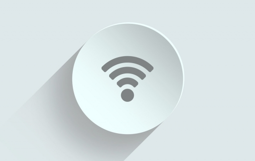
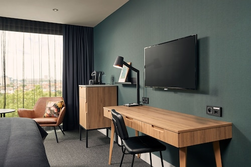
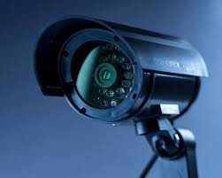
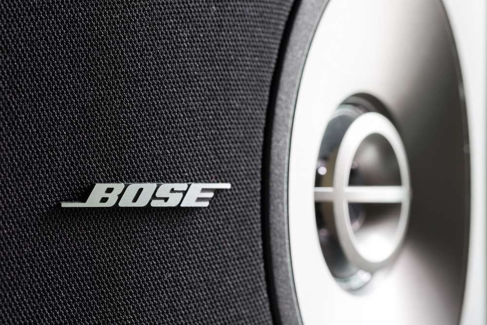

Introduction
Coriotech est une entreprise qui se concentre exclusivement sur des prestations de service et des solutions pour le confort digitale dans le secateurs d’hospitalité et soins de santé. L’entreprise veut que ces clients aient au moins - ou même plus - le confort dans ses résidences qu’ils ont à la maison. L’équipe de Coriotech a une connaissance approfondie dans le domaine d’ICT et sont des experts dans les domaines de WIFI, télévisions connectées, téléphonie VOIP, système audio, etc.
Spécialité
Coriotech vend des solutions hightech dans le secteur d’hospitalité et soins de santé depuis 2004. Ils équipent des chambres d’hôtels et des centres de soins résidentiels avec des solutions spécifiques WIFI, Televisions connectées, téléphonie VOIP, système audio etc
Les produits dans le domaine de confort digitale évoluent très vite et demande une formation continue des installateurs spécialisés.
Coriotech n’est pas la seule entreprise à vendre des solutions de confort digitale, mais il sont le premier a le positionner dans le marché « As A Service ». C’est ce qui rend Coriotech unique en Belgique!
| Wifi |  |
|---|---|
| Télévisions |  |
| VOIP Téléphonie | |
| Surveillance par caméra |  |
| Audio en Video |  |
Personnele
Coriotech est fondée en juin 2004 et est géré par Filip Helssen (CEO) depuis 2017.
Tous les jours, une équipe jeune et dynamique de 4 employeés et 2 ouvriers sont occupé a rendre service au clientèle de Coriotech.
Les techniciens Kevin et Louwis s’occupent de la programmation des systèmes informatiques ainsi que l’installation et suivi des equipments dans les hôtels et résidences.
Les employés Bastia, Sherley, Luc et Pieter ont aussi une valeur importante pour Coriotech. Sherley, management assistent, est responsable pour l’administration et suivi des emails et appels téléphoniques. Pieter s’occupe de la stratégie marketing et commerciale. Bastia gère les systèmes IT interne de Coriotech et assiste également Kevin dans la programmation des systèmes des clients. Et finalement Luc est le comptable de Coriotech.
Quelques clients
| Hôtel De Tuilerieën | Hôtel Carlton |
 |
 |
| Albion Hôtel | Hôtel Astel |
 |
 |
| Hôtel Elisabeth | Floreal Clubs |
 |
 |